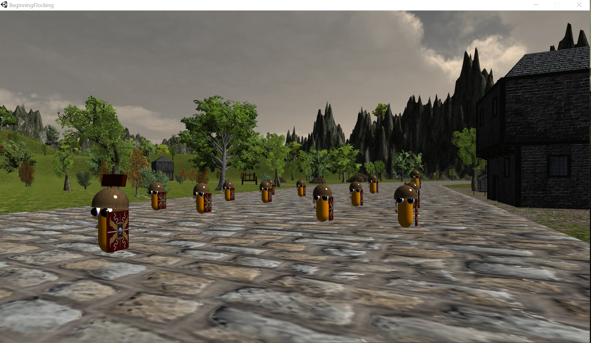
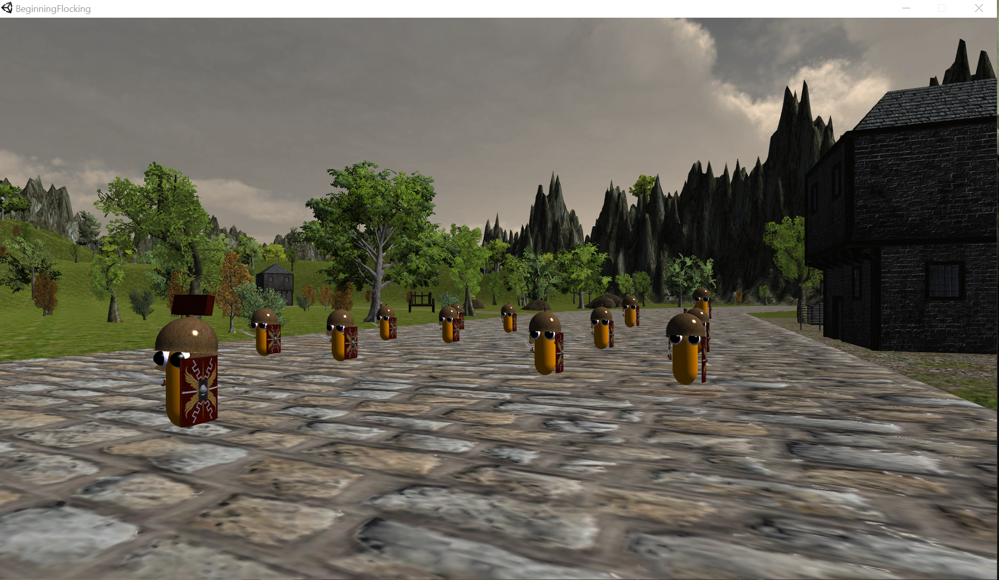
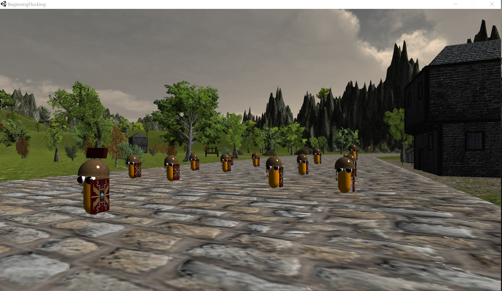
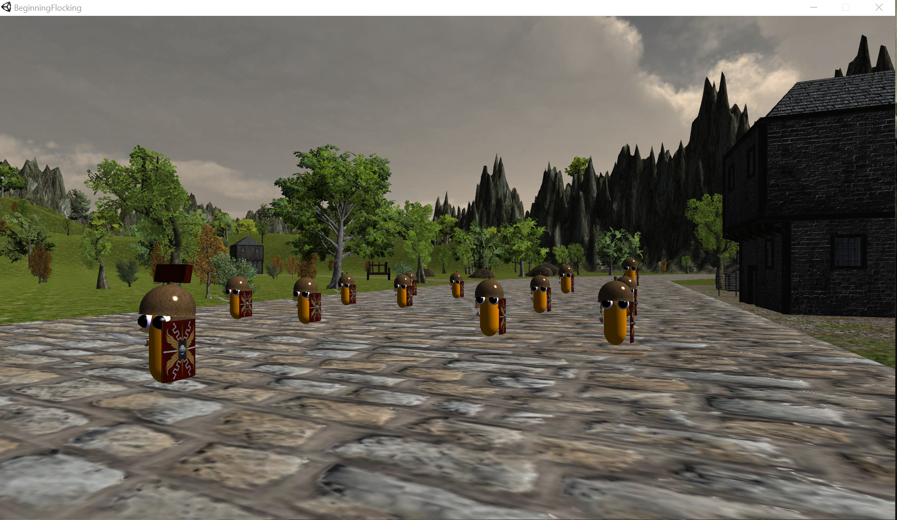

What would you like to see?
My Skills
My Projects
 





C# was the first language that I learned after coming to RIT. I easily consider it the language that I have the most knowledge in. I have made more applications than I can remember in C# (mostly small, but also some very large projects). In my free time, I use C# quite heavily to work on passion projects.
C++ is a language that I am currently learning and I have grown to really enjoy programming in it. While I am no expert, I am definitely feeling comfortable with this language and am enjoying learning more about it. Currently I am working in C++ using OpenGL to implement a 3D game of billiards!
JavaScript is another language I am currently learning. However, I have only just begun to interact with and use it. I am still very much a beginner when it comes to this language. However, I am constantly learning more about it and the more I learn the more I like!
For someone who wants to focus more on the back-end side of things, I actually really enjoy using HTML and CSS! This site you're on now was made entirely with these tools, and I enjoy building websites and interactive experiences with them. I have worked a lot with HTML and CSS and am quite proud of all I've been able to accomplish with these tools.
Python is a language that I am currently re-teaching myself. I learned it once, in the long gone years of high school. Now, as I am pursuing a minor in software engineering, I am re-learing it to align myself more with that curriculum.

Hey! I'm Charles Williams and I am currently a student studying Game Design and
Developement at the Rochester Institute of Technology. I have a passion for programming, web
design, and game design and I hope that in this portfolio you can get a sample of each!
If any project you see here interests you, then be sure to check out my GitHub!